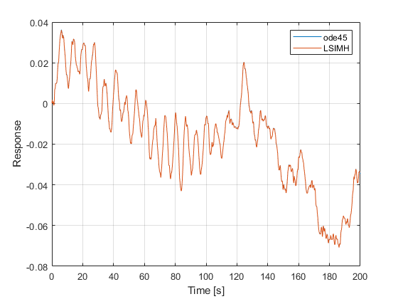

How to use f_LSIMP
f_LSIMP computes the exact response of an LTI system subject to polynomial input (impulse, step, linear etc...). As detailed in its reference, it can be used to compute the response to random input using third-order hold, resulting (for a given accuracy) in larger time steps (lower oversampling) compared to the zero-order hold and first-order hold used by MATLAB's lsim.m.
Contents
Define model
State-space model from https://de.mathworks.com/help/control/ug/mimo-state-space-models.html
clc, close all
A = [-0.0558 -0.9968 0.0802 0.0415
0.5980 -0.1150 -0.0318 0
-3.0500 0.3880 -0.4650 0
0 0.0805 1.0000 0];
B = [ 0.0073 0
-0.4750 0.0077
0.1530 0.1430
0 0 ];
C = [ 0 1 0 0;
0 0 0 1];
D = zeros(2);
Define parameters
Define channels of interest and zero initial conditions:
i = 1; j = 2; % desired output (response) and input (excitation) channels x0 = zeros(size(A,1),1); % initial conditions
Define step size (1/sample rate). f_LSIMP can set it by itself with minimal oversampling if [].
dt = 1/5; % time step
Define input vector:
N = 1001; % desired number of time steps t = (0:N-1).'*dt; % time axis of input rng(0); % set seed for reproducible results u = randn(N,numel(j)); % input vector
Calculate response
Compute the system response using f_LSIMP (first-order hold)
[y0,t0] = f_LSIMP(A,B(:,j),C(i,:),D(i,j),u,dt,x0,1);
Compute the system response using ode45 (define first-order hold in the interpolant function).
ufcn = griddedInterpolant(t,u,'linear'); % build input interpolant (from 2021a works with multiple columns of 'u') [t1,x] = ode45(@aux_ssfun,t,x0,odeset('MaxStep',dt),A,B(:,j),ufcn); % integrate states y1 = x*C(i,:).' + u*D(i,j).'; % compute outputs
Plot results
Compare the solutions of the two solvers: they are almost identical
figure plot(t1,y1,'-',t0,y0,'-') ylabel('Response'), xlabel('Time [s]'), grid on legend('ode45','LSIMH')
For random inputs, a more accurate solution for a given step size (respectively: a large step size for a given accuracy) can be obtained with third-order hold (HO=3 in f_LSIMP, Method='spline' in griddedInterpolant).
Auxiliary functions
function dx = aux_ssfun(t,x,A,B,ufcn) u = ufcn(t); % evaluate excitation at integrator time dx = A*x + B*u; % state equation end